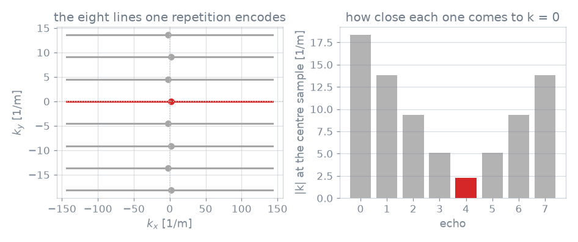

Sequence description: reading rules#
How a Pulseq file and an MRD stream are read into a
SequenceDescription. What a description gives a simulator
is summarised on Sequence description; how it is packed for the
kernels is Kernels.
Events#
Kind |
Timestamp |
Payload, in wire order |
|---|---|---|
|
block start |
none |
|
pulse isocentre, |
definition id, use, amplitude, phase (rad), frequency offset (Hz), shim id, slice-select gradient (Hz/m) |
|
sample nearest the readout’s own \(k = 0\) |
role, phase (rad), echo flag |
Timestamps are in microseconds from the start of the repetition read. The
payload is positional, which is why an event’s fields are reached through
named properties (rf_amplitude_hz, adc_role, …) rather than by index.
Each event also carries an action word (EventAction): CRUSH_BEFORE and
CRUSH_AFTER around a refocusing pulse, SHIFT_AFTER and SPOIL_AFTER after
a sample. A description read from a file or a stream has no actions; they are
added when the events are re-emitted through a simulator’s handlers.
RF use#
The use tag is Pulseq’s: EXCITATION, REFOCUSING, INVERSION,
SATURATION, PREPARATION, OTHER, or UNKNOWN where the file is silent.
from_description() sends REFOCUSING,
INVERSION and SATURATION to the handlers of the same name and every other
use to excitation, so a refocusing pulse reaches the refocusing handler
whatever angle it turns.
ADC role and echo flag#
The role relates a sample to the other samples of its repetition: SINGLE
where a repetition takes one and where several are alike, ECHO_CENTER for
the one nearest the centre of a train whose samples are not alike,
NON_CENTER for the rest, and NON_ACQUIRED for a window that records
nothing. The echo flag says whether the position reaches \(k = 0\).
record="all" keeps every ADC event, "acquired" those whose role is not
NON_ACQUIRED, and "echo" those flagged.
Pulseq block conversion#
A Pulseq file is a table of blocks, each holding at most one RF pulse, one gradient per axis and one ADC window. One block becomes one event: a block with a pulse is an RF event, one with an ADC and no pulse an ADC event, any other a WAIT. Gradients are not events.
The file is parsed and its trajectory computed by pypulseq
(pip install blochsim[pulseq]); a sequence in memory with pypulseq’s reading
interface, pypulseq’s or pypulseqpp’s, is read the same way. The gradients are
read for two things only: the k-space trajectory that places each ADC event,
and the slice-select amplitude under each pulse’s isocentre, the magnitude of
the vector the three axes play there.
Repetition selection#
The TRSize definition states how many blocks one repetition holds, and
reading is refused without it: the period is declared by the design, not
searched for. The repetition read is, in order of precedence, tr_index
(counted in whole repetitions), the file’s TRRef definition, and the first
repetition that acquires. The last is refused when the acquiring repetitions
play different pulses (compared by shape and flip angle, so an RF-spoiling
phase increment is no difference), as in an optimised echo train or a
fingerprinting schedule.
from blochsim.simulators import FSESimulator
# The tissue is given; the echo spacing, the train length, the refocusing
# angle and the pulse shapes are read.
train = FSESimulator.from_pulseq("fse.seq", states=20)
signal = train.simulate(T1=830.0, T2=80.0)
RF definitions#
An RF event names a definition. Pulseq writes a library row per pulse occurrence, so RF spoiling writes one row per repetition of the same shape; rows with the same magnitude, phase and time shapes (normalised to their peak) collapse onto one definition.
A definition can carry a phase per sample, sample times of its own, a slice-select gradient per sample, up to eight frequency bands, and one envelope per transmit channel. Which of those are present decides the rotation mode; see Extended phase graphs: operators.
Flip angle#
The flip angle of an event is \(2\pi\,|A \int e(t)\,\mathrm{d}t|\) for the event
amplitude \(A\) and the definition’s envelope \(e\), integrated on the RF raster
the description carries (rf_raster_time_s). Sample times are stored in units
of that raster, so a pulse whose dwell differs from the raster keeps its
duration; reading a description against a raster other than the one its shapes
were written on scales every flip angle by the ratio.
The two sources normalise differently:
Source |
Envelope |
Event amplitude |
|---|---|---|
Pulseq file, |
integral \(1/(2\pi)\) s |
flip angle in radians |
MRD stream |
peak of one |
Hz |
A pulse played under a slice-select gradient \(G\) is given the bandwidth \(G\,\Delta z\), where \(\Delta z\) is the reference slice thickness: the excitation’s small-tip bandwidth, the full width at half maximum of its envelope’s Fourier transform, over its own gradient. Slice positions are then in units of \(\Delta z\) for every pulse of the repetition, so a refocusing pulse designed for a wider slice selects a wider one. A pulse with no gradient keeps a bandwidth of zero and stays non-selective, and the gradient is read at the pulse centre, so a gradient that varies under the pulse is not followed. A pulse with unevenly spaced sample times is refused, since a definition read from a file is played one sample per dwell.
Echo detection#
A Pulseq file does not say which sample is the echo; the trajectory \(k = \gamma \int G\,\mathrm{d}t\) does. A readout’s centre is the sample where the axes that readout sweeps come closest to zero, an axis being swept when its span across the readout exceeds \(10^{-6}\) of its largest absolute coordinate there (or of 1 m\(^{-1}\), whichever is larger).


One repetition of a spin-echo train. Every readout sweeps through its own zero in the readout direction; one of the eight is also at the centre of the phase-encode direction.#
Two questions follow, answered over every instance of an ADC position in the file.
Whether a position bears an echo is absolute. Its smallest \(|k|\) at the centre sample is compared with the scan’s own closest approach to \(k = 0\), within \(10^{-5}\) of the largest coordinate the scan reaches plus \(10^{-6}\) m\(^{-1}\). A finite phase-encode offset stays out and accumulated floating-point error stays in.
What a position’s role is is structural. The norm is taken only along the
axes the readout sweeps, so a CPMG echo is central whatever line it encodes.
Where a repetition takes several samples, those within \(10^{-3}\) of the
largest of these norms from the smallest are central and the rest
NON_CENTER. A single central sample is ECHO_CENTER; several central
samples, as every echo of a CPMG train or every blade of a PROPELLER, are all
SINGLE.
The train in the figure is the tied case: all eight roles are SINGLE, and one
echo flag is set.
MRD stream#
Pulserver’s reconstruction proxy reads the sequence file a series was played
from and sends its description after the MRD XML header and before the first
acquisition, as one TEXT message: a JSON object under the key
pulserver_sequence_description, holding one entry per file of the sequence
chain. read_mrd_description() reads the stream up to that
message, returns the XML header and the descriptions in play order, and leaves
the stream at the first acquisition. A message other than a filename, config,
header or text before the description is refused.
Each entry holds subsequence_index, tr_duration_us, rf_raster_time_s,
the events as three base64 arrays – type (int32), timestamp_us
(float64) and params (float32, seven per event, in the wire order above) –
and rf_definitions, each with its bandwidth, bands, and Pulseq-compressed
magnitude, phase and time shapes. The stream carries no shim definitions, no
per-sample slice-select gradient, no crusher dephasing or voxel size, and no
event actions.
Gradients#
A Pulseq file has no gradient use, so a crusher cannot be told from a phase
encode without following the k-space moment through the whole repetition, and
an EPG simulation quantises that moment to whole orders. A description
therefore carries one dephasing for the sequence, crusher_dephasing_rad, the
turn one unbalanced gradient winds across a voxel of voxel_size_m; their
ratio scales diffusion and flow, and a dephasing of zero leaves both out.
Which gradients play around each pulse and sample comes from the simulator’s handlers (see Signal model):
from blochsim.simulators import FSESimulator, MRFSimulator
# The same file, read as a refocused train and as an unbalanced one.
refocused = FSESimulator.from_pulseq("scan.seq")
unbalanced = MRFSimulator.from_pulseq("scan.seq")
A moment that is not a whole number of orders has no representation: a bipolar pair, a velocity-encoding lobe, a crusher of twice its neighbour’s area. A preparation’s own spoiler does not survive either, since a handler reinstates what a pulse or a sample implies and a gradient alone is neither.